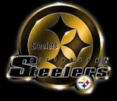

| INFORMACIÓN DEL EQUIPO | |
|---|---|
| Equipo | Pittsburgh Steelers |
| Ciudad | Pittsburgh, Pennsylvania |
| Fundación | 1933 |
| Super Bowls | 6 |
Los Pittsburgh Steelers son una de las franquicias históricas de la NFL.
El equipo tuvo una etapa especialmente exitosa durante la década de 1970.
Los Steelers han ganado 6 Super Bowls.
Los Steelers ganaron cuatro Super Bowls durante la década de 1970.
6 Super Bowls forman parte de su historia.